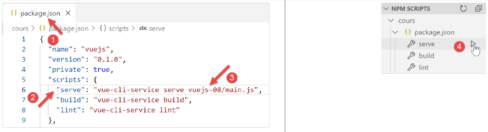

10. 项目 [vuejs-08]：与组件层级无关的事件，组件生命周期
[vuejs-08] 项目演示了如何让在组件层级中没有直接关联的组件通过事件进行通信。[vuejs-08] 项目的目录结构如下：

10.1. 主脚本 [main.js]
[main.js] 脚本与之前的示例保持一致。
10.2. [event-bus.js] 脚本
[event-bus.js] 脚本是我们用来发布和监听事件的工具：
import Vue from 'vue';
const eventBus = new Vue();
export default eventBus;
[event-bus] 脚本仅创建了一个 [Vue] 类的实例（第 1–2 行），并将其导出（第 3 行）。[Vue] 类提供了两个用于处理事件的方法：
- [Vue].$emit(name, data)：允许你发出名为 [name] 且关联数据 [data] 的事件；
- [Vue].$on(name, fn)：允许您监听名为 [name] 的事件，并由函数 [fn] 进行处理。函数 [fn] 将接收由事件发射者关联的数据 [data] 作为参数；
这种事件处理机制与组件层级无关。希望通过此方式进行通信的组件只需使用同一个 [View] 类的实例来发布/监听事件。在本示例中，我们将使用前文 [event-bus.js] 脚本定义的 [eventBus] 实例。
10.3. 主视图 [App.vue]
主视图 [App] 的代码如下：
<template>
<div class="container">
<b-card>
<b-alert show variant="success" align="center">
<h4>[vuejs-08] : événements indépendants de la hiérarchie des composants, cycle de vie des composants</h4>
</b-alert>
<!-- les trois composants qui communiquent par évt -->
<Component1 />
<Component3 />
<Component2 />
</b-card>
</div>
</template>
<script>
import Component1 from "./components/Component1";
import Component2 from "./components/Component2";
import Component3 from "./components/Component3";
export default {
name: "app",
// composants
components: {
Component1,
Component2,
Component3
}
};
</script>
- 第 8–10 行：主视图 [App] 使用三个组件 [Component1、Component2、Component3]，它们将通过事件进行通信。这三个组件在 [App] 视图中处于同一层级。此外，它们之间不存在层级关系；
10.4. [Component1] 组件
[Component1] 组件的代码如下：
<template>
<b-row>
<b-col>
<b-alert show
variant="warning"
v-if="showMsg">Evénement [someEvent] intercepté par [Component1]. Valeur reçue={{data}}</b-alert>
</b-col>
</b-row>
</template>
<script>
import eventBus from "../event-bus.js"
export default {
name: "component1",
// état du composant
data() {
return {
data: "",
showMsg: false
};
},
// méthodes de gestion des évts
methods: {
// gestion de l'evt [someEvent]
doSomething(data) {
this.data = data;
this.showMsg = true;
}
},
// gestion du cycle de vie du composant
// évt [created] - le composant a été créé
created() {
// écoute de l'évt [someEvent]
eventBus.$on("someEvent", this.doSomething);
}
};
</script>
评论
- 第 4–6 行：一个显示第 18 行数据 [data] 的提示框。该数据将由第 25 行的事件处理程序 [doSomething] 初始化。该处理程序在接收到 [someEvent] 事件时触发（第 34 行）。 提示框的显示取决于第19行[showMsg]属性的值。该属性同样由第25行的[doSomething]事件处理程序设置；
- 第 32 行：[created] 函数是一个事件处理程序。它处理 [created] 事件，该事件在组件的生命周期中触发。还有其他事件 [beforeCreate, created, beforeMount, mounted, beforeUpdate, updated, beforeDestroy, destroyed]。[created] 事件在组件创建完成时触发；
- 第 12 行：导入了 [Vue] 类的 [eventBus] 实例；
- 第 34 行：用于监听 [someEvent] 事件。当该事件发生时，将调用第 25 行中的 [doSomething] 方法；
- 第 25 行：[doSomething] 方法接收 [someEvent] 事件的触发者关联的数据，作为 [data] 参数；
- 第 26–27 行：更新组件的状态，以便第 4–6 行中的提示框显示接收到的数据；
10.5. [Component2] 组件
[Component2] 组件如下：
<template>
<div>
<b-button @click="createEvent">Créer un événement</b-button>
</div>
</template>
<!-- script -->
<script>
import eventBus from '../event-bus.js'
export default {
name: "component2",
// méthodes de gestion des évts
methods: {
createEvent() {
eventBus.$emit("someEvent", { x: 2, y: 4 })
}
}
};
</script>
评论
- 第 3 行：一个用于创建事件的按钮。当用户点击此按钮时，将调用第 13 行中的 [createEvent] 方法；
- 第 8 行：导入由 [event-bus.js] 脚本定义的 [eventBus] 实例；
- 第 14 行：使用该实例发出名为 [someEvent] 的事件，并关联数据 [{ x: 2, y: 4 }]。最终，当用户点击第 3 行的按钮时，将发出 [someEvent] 事件。回顾 [Component1] 的定义，它将拦截此事件；
10.6. [Component3] 组件
该组件的代码如下：
<template>
<b-row>
<b-col>
<b-alert show
v-if="showMsg">Evénement [someEvent] intercepté par [Component3]. Valeur reçue={{data}}</b-alert>
</b-col>
</b-row>
</template>
<script>
import eventBus from "../event-bus.js"
export default {
name: "component3",
// état du composant
data() {
return {
data: "",
showMsg: false
};
},
methods: {
// gestion de l'evt [someEvent]
doSomething(data) {
this.data = data;
this.showMsg = true;
}
},
// gestion du cycle de vie du composant
// évt [created] - le composant a été créé
created() {
// écoute de l'évt [someEvent]
eventBus.$on("someEvent", this.doSomething);
}
};
</script>
[Component3] 是 [Component1] 的克隆。它的存在仅是为了演示一个事件可以被多个组件拦截。
10.7. 运行 [vuejs-08] 项目
